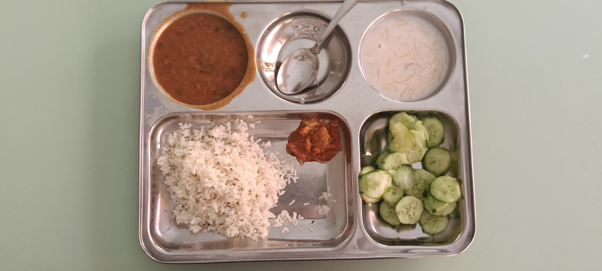
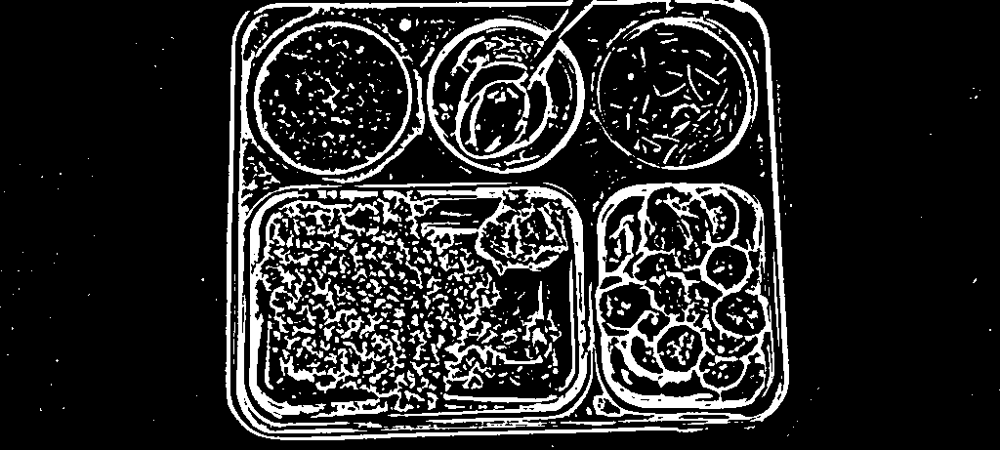
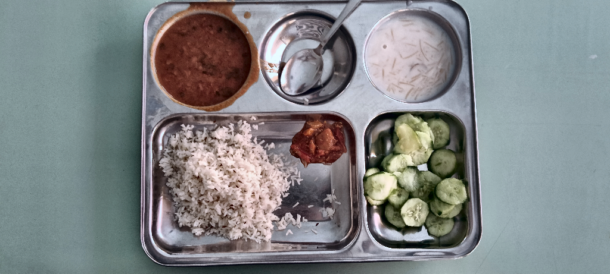
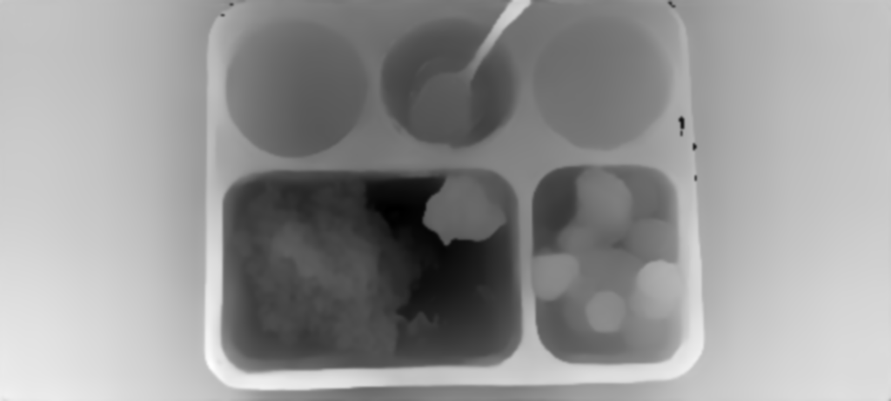
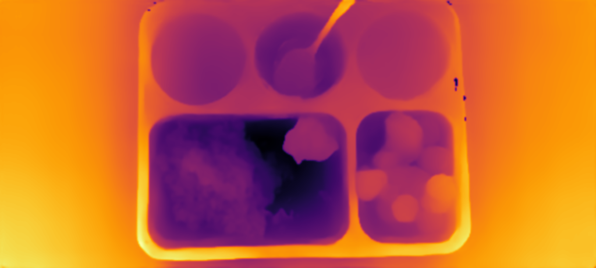
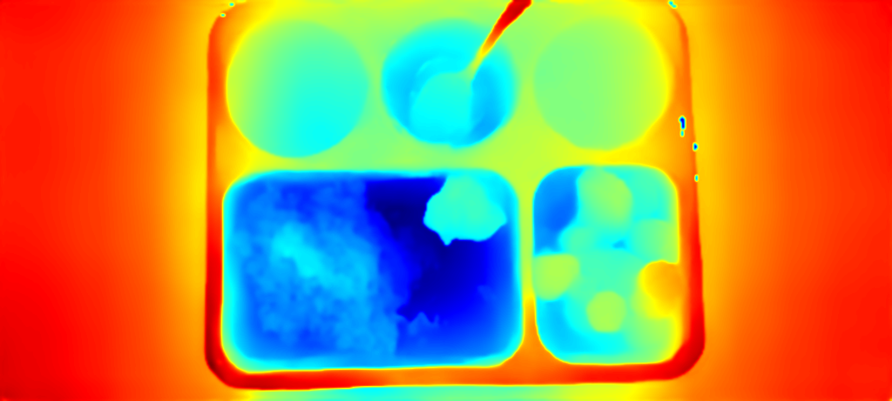
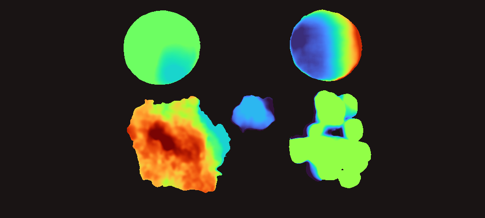
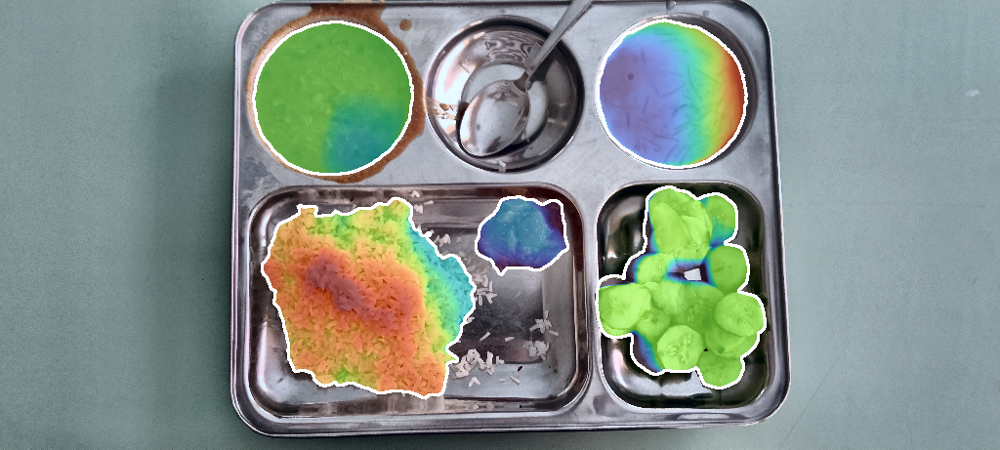
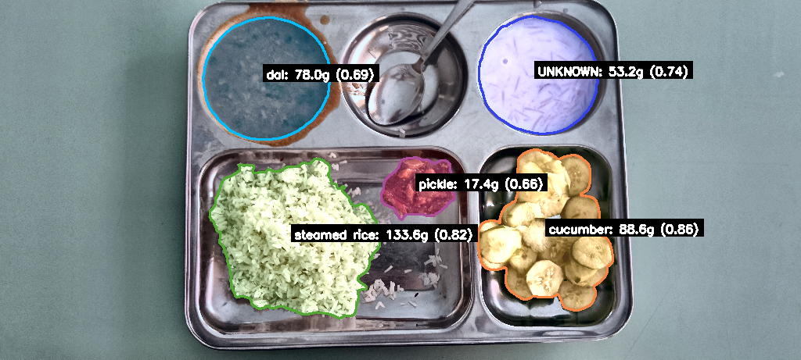

{
"resolution": "4080x1840",
"channels": 3,
"dtype": "uint8",
"expected_items": [
"seviyan",
"dal",
"steamed rice",
"cucumber",
"pickle"
],
"plate_profile": null,
"debug": true
}








[]
{
"item_id": "cucumber_1",
"area_pixels": 23298,
"estimated_height_cm": 1.813,
"volume_estimate_ml": 84.4,
"density": 1.05,
"mass_g": 88.6,
"class_label": "cucumber",
"class_confidence": 0.8933,
"depth_stability": 1.0,
"scale_confidence": 0.7,
"composite_confidence": 0.8645,
"prior_applied": true,
"diagnostics": {
"original_sam3_query": "cucumber salad",
"candidate_labels": [
"cucumber salad"
],
"menu_matching_result": "cucumber",
"final_food_label": "cucumber",
"confidence": 0.8933,
"uncertainty": 0.1067,
"original_mask_id": "mask_00",
"grouped_instance_id": "inst_0",
"fragment_count": 1,
"decision_reason": "SINGLE_INSTANCE"
},
"volume_diagnostics": {
"food_name": "cucumber",
"fallbacks_applied": [],
"raw_pixel_count": 23298,
"archetype": "sliced_salad",
"archetype_justification": "Discrete planar vegetable slices with calibrated cut-thickness floor (cucumber)",
"pixel_area_method": "plate_calibrated_uniform",
"mean_pixel_area_cm2": 0.00199746317230165,
"food_surface_area_cm2": 46.54,
"valid_pixel_count": 23150,
"clipped_pixel_count": 148,
"valid_pixel_ratio": 0.9936,
"height_stats_cm": {
"min": -14.991,
"p5": -11.499,
"p25": -10.101,
"median": -9.11,
"mean": -8.628,
"p75": -7.522,
"p95": -3.271,
"max": -1.59,
"std": 2.299
},
"slice_thickness_floor_cm": 0.75,
"raw_integrated_vol_ml": 84.39,
"compartment_capped": false,
"final_volume_ml": 84.4
},
"fragment_count": 1
}{
"item_id": "steamed rice_2",
"area_pixels": 32269,
"estimated_height_cm": 2.461,
"volume_estimate_ml": 134.7,
"density": 0.992,
"mass_g": 133.6,
"class_label": "steamed rice",
"class_confidence": 0.8014,
"depth_stability": 1.0,
"scale_confidence": 0.7,
"composite_confidence": 0.8188,
"prior_applied": true,
"diagnostics": {
"original_sam3_query": "rice",
"candidate_labels": [
"rice"
],
"menu_matching_result": "steamed rice",
"final_food_label": "steamed rice",
"confidence": 0.8014,
"uncertainty": 0.1986,
"original_mask_id": "mask_01",
"grouped_instance_id": "inst_1",
"fragment_count": 1,
"decision_reason": "SINGLE_INSTANCE"
},
"volume_diagnostics": {
"food_name": "steamed rice",
"fallbacks_applied": [
"MOUND_WELL_FLOORED_1.8CM"
],
"raw_pixel_count": 32269,
"archetype": "mounded_grain",
"archetype_justification": "Granular cohesive mound filling compartment bed + curved dome above rim (steamed rice)",
"pixel_area_method": "plate_calibrated_uniform",
"mean_pixel_area_cm2": 0.00199746317230165,
"food_surface_area_cm2": 64.46,
"valid_pixel_count": 32184,
"clipped_pixel_count": 85,
"valid_pixel_ratio": 0.9974,
"height_stats_cm": {
"min": -22.601,
"p5": -19.644,
"p25": -16.827,
"median": -15.462,
"mean": -15.829,
"p75": -14.716,
"p95": -13.167,
"max": -12.022,
"std": 1.854
},
"effective_well_depth_cm": 1.8,
"raw_integrated_vol_ml": 158.64,
"compartment_capped": true,
"cap_limit_ml": 134.7,
"final_volume_ml": 134.7
},
"fragment_count": 1
}{
"item_id": "UNKNOWN_3",
"area_pixels": 17951,
"estimated_height_cm": 1.485,
"volume_estimate_ml": 53.2,
"density": 1.0,
"mass_g": 53.2,
"class_label": "UNKNOWN",
"class_confidence": 0.7534,
"depth_stability": 0.75,
"scale_confidence": 0.7,
"composite_confidence": 0.7388,
"prior_applied": false,
"diagnostics": {
"original_sam3_query": "food",
"candidate_labels": [
"food"
],
"menu_matching_result": null,
"final_food_label": "UNKNOWN",
"confidence": 0.7534,
"uncertainty": 0.2466,
"original_mask_id": "mask_02",
"grouped_instance_id": "inst_4",
"fragment_count": 1,
"decision_reason": "ABSTAINED_INSUFFICIENT_EVIDENCE"
},
"volume_diagnostics": {
"food_name": "UNKNOWN",
"fallbacks_applied": [],
"raw_pixel_count": 17951,
"archetype": "chunky_suspension",
"archetype_justification": "Irregular 3D solids suspended in gravy within compartment (UNKNOWN)",
"pixel_area_method": "plate_calibrated_uniform",
"mean_pixel_area_cm2": 0.00199746317230165,
"food_surface_area_cm2": 35.86,
"valid_pixel_count": 17939,
"clipped_pixel_count": 12,
"valid_pixel_ratio": 0.9993,
"height_stats_cm": {
"min": -8.52,
"p5": -8.3,
"p25": -8.094,
"median": -7.674,
"mean": -7.435,
"p75": -6.951,
"p95": -5.802,
"max": -4.261,
"std": 0.8
},
"effective_well_depth_cm": 1.8,
"raw_integrated_vol_ml": 53.25,
"compartment_capped": false,
"final_volume_ml": 53.2
},
"fragment_count": 1
}{
"item_id": "dal_4",
"area_pixels": 20114,
"estimated_height_cm": 1.782,
"volume_estimate_ml": 71.6,
"density": 1.089,
"mass_g": 78.0,
"class_label": "dal",
"class_confidence": 0.5622,
"depth_stability": 1.0,
"scale_confidence": 0.7,
"composite_confidence": 0.6858,
"prior_applied": true,
"diagnostics": {
"original_sam3_query": "dal tadka",
"candidate_labels": [
"dal tadka"
],
"menu_matching_result": "dal",
"final_food_label": "dal",
"confidence": 0.5622,
"uncertainty": 0.4378,
"original_mask_id": "mask_03",
"grouped_instance_id": "inst_3",
"fragment_count": 1,
"decision_reason": "SINGLE_INSTANCE"
},
"volume_diagnostics": {
"food_name": "dal",
"fallbacks_applied": [
"WELL_DEPTH_FLOORED_2.0CM"
],
"raw_pixel_count": 20114,
"archetype": "liquid_in_well",
"archetype_justification": "Conformal fluid filling molded compartment well; flat free surface (dal)",
"pixel_area_method": "plate_calibrated_uniform",
"mean_pixel_area_cm2": 0.00199746317230165,
"food_surface_area_cm2": 40.18,
"valid_pixel_count": 20045,
"clipped_pixel_count": 69,
"valid_pixel_ratio": 0.9966,
"height_stats_cm": {
"min": -11.752,
"p5": -11.463,
"p25": -10.64,
"median": -9.617,
"mean": -9.349,
"p75": -8.249,
"p95": -6.437,
"max": -3.535,
"std": 1.564
},
"effective_well_depth_cm": 2.0,
"raw_integrated_vol_ml": 71.61,
"compartment_capped": false,
"final_volume_ml": 71.6
},
"fragment_count": 1
}{
"item_id": "pickle_5",
"area_pixels": 5610,
"estimated_height_cm": 1.151,
"volume_estimate_ml": 12.9,
"density": 1.35,
"mass_g": 17.4,
"class_label": "pickle",
"class_confidence": 0.5189,
"depth_stability": 1.0,
"scale_confidence": 0.7,
"composite_confidence": 0.6589,
"prior_applied": true,
"diagnostics": {
"original_sam3_query": "spicy achar",
"candidate_labels": [
"spicy achar"
],
"menu_matching_result": "pickle",
"final_food_label": "pickle",
"confidence": 0.5189,
"uncertainty": 0.4811,
"original_mask_id": "mask_04",
"grouped_instance_id": "inst_2",
"fragment_count": 1,
"decision_reason": "SINGLE_INSTANCE"
},
"volume_diagnostics": {
"food_name": "pickle",
"fallbacks_applied": [],
"raw_pixel_count": 5610,
"archetype": "condiment_dollop",
"archetype_justification": "Concentrated viscous dollop on plate surface (pickle)",
"pixel_area_method": "plate_calibrated_uniform",
"mean_pixel_area_cm2": 0.00199746317230165,
"food_surface_area_cm2": 11.21,
"valid_pixel_count": 5578,
"clipped_pixel_count": 32,
"valid_pixel_ratio": 0.9943,
"height_stats_cm": {
"min": -16.984,
"p5": -12.777,
"p25": -11.66,
"median": -11.019,
"mean": -11.208,
"p75": -10.507,
"p95": -10.189,
"max": -9.933,
"std": 0.928
},
"raw_integrated_vol_ml": 12.9,
"compartment_capped": false,
"final_volume_ml": 12.9
},
"fragment_count": 1
}


{
"food_items": [
{
"name": "cucumber",
"volume_ml": 84.4,
"mass_g": 88.6,
"calories": 16.0,
"protein": 0.6,
"carbs": 3.2,
"fat": 0.1,
"confidence": 0.8645,
"class_label": "cucumber",
"class_confidence": 0.8933,
"top_k": [
{
"label": "cucumber",
"confidence": 0.8933,
"raw_similarity": 0.8933
}
],
"identification_status": "recognized",
"menu_match": true,
"matched_menu_item": "cucumber",
"identification_confidence": 0.8933,
"segmentation_confidence": 0.8933,
"association_confidence": 1.0,
"menu_match_confidence": 1.0,
"depth_confidence": 1.0,
"scale_confidence": 0.7,
"diagnostics": {
"original_sam3_query": "cucumber salad",
"candidate_labels": [
"cucumber salad"
],
"menu_matching_result": "cucumber",
"final_food_label": "cucumber",
"confidence": 0.8933,
"uncertainty": 0.1067,
"original_mask_id": "mask_00",
"grouped_instance_id": "inst_0",
"fragment_count": 1,
"decision_reason": "SINGLE_INSTANCE"
},
"volume_diagnostics": {
"food_name": "cucumber",
"fallbacks_applied": [],
"raw_pixel_count": 23298,
"archetype": "sliced_salad",
"archetype_justification": "Discrete planar vegetable slices with calibrated cut-thickness floor (cucumber)",
"pixel_area_method": "plate_calibrated_uniform",
"mean_pixel_area_cm2": 0.00199746317230165,
"food_surface_area_cm2": 46.54,
"valid_pixel_count": 23150,
"clipped_pixel_count": 148,
"valid_pixel_ratio": 0.9936,
"height_stats_cm": {
"min": -14.991,
"p5": -11.499,
"p25": -10.101,
"median": -9.11,
"mean": -8.628,
"p75": -7.522,
"p95": -3.271,
"max": -1.59,
"std": 2.299
[
{
"step": "Input",
"message": "Original image saved",
"params": {
"resolution": "4080x1840"
},
"elapsed_s": 0.286,
"input_file": null,
"output_file": "original.png",
"timestamp": "2026-11-14T21:47:06.679899"
},
{
"step": "Pipeline",
"message": "Step 1 — Preprocessing & Perspective Warp",
"params": {},
"elapsed_s": null,
"input_file": null,
"output_file": null,
"timestamp": "2026-11-14T21:47:06.679899"
},
{
"step": "Quality Gate",
"message": "PASS",
"params": {
"blur_score": 67.66,
"tilt_deg": 1.0
},
"elapsed_s": null,
"input_file": null,
"output_file": null,
"timestamp": "2026-11-14T21:47:06.834648"
},
{
"step": "Preprocessing",
"message": "Resize applied",
"params": {
"original": "4080x1840",
"target_long_edge": 1024,
"scale": 0.251
},
"elapsed_s": 0.0009,
"input_file": null,
"output_file": "01_resized.png",
"timestamp": "2026-11-14T21:47:06.862314"
},
{
"step": "Preprocessing",
"message": "Gaussian blur applied",
"params": {
"kernel": 5
},
"elapsed_s": 0.0008,
"input_file": null,
"output_file": "02_denoised.png",
"timestamp": "2026-11-14T21:47:06.882780"
},
{
"step": "Preprocessing",
"message": "LAB color normalization applied",
"params": {},
"elapsed_s": 0.1458,
"input_file": null,
"output_file": "03_color_normalized.png",
"timestamp": "2026-11-14T21:47:07.053402"
},
{
"step": "Preprocessing",
"message": "CLAHE contrast enhancement applied",
"params": {
"clip_limit": 2.0,
"tile_grid": "8x8"
},
"elapsed_s": 0.004,
"input_file": null,
"output_file": "04_contrast_enhanced.png",
"timestamp": "2026-11-14T21:47:07.083676"
},
{
"step": "Preprocessing",
"message": "Canny edge detection",
"params": {
"low": 50,
"high": 150
},
"elapsed_s": 0.006| Step | Message | Params | Time |
|---|---|---|---|
| Input | Original image saved | {"resolution": "4080x1840"} | 0.2860s |
| Pipeline | Step 1 — Preprocessing & Perspective Warp | — | — |
| Quality Gate | PASS | {"blur_score": 67.66, "tilt_deg": 1.0} | — |
| Preprocessing | Resize applied | {"original": "4080x1840", "target_long_edge": 1024, "scale": 0.251} | 0.0009s |
| Preprocessing | Gaussian blur applied | {"kernel": 5} | 0.0008s |
| Preprocessing | LAB color normalization applied | — | 0.1458s |
| Preprocessing | CLAHE contrast enhancement applied | {"clip_limit": 2.0, "tile_grid": "8x8"} | 0.0040s |
| Preprocessing | Canny edge detection | {"low": 50, "high": 150} | 0.0064s |
| Preprocessing | Warp skipped (no 4-pt contour) | {"warped": false} | — |
| Preprocessing | Complete | {"output_size": "1024x461"} | 0.4389s |
| Pipeline | Step 2 — Compartments & Scale | — | — |
| Compartment Detection | Detected 0 compartments | {"min_area_frac": 0.02, "max_area_frac": 0.9, "compartment_count": 0} | 0.0070s |
| Scale Calibration | Fallback to bbox-based calibration | {"cm_per_pixel": 0.04469, "method": "bbox"} | — |
| Compartment Detection | Scale computed | {"cm_per_pixel": 0.04469, "pixel_area_cm2": 0.00199746, "compartments": 0, "scale_confidence": 0.7} | 0.0412s |
| Pipeline | Step 3 — Depth Estimation | — | — |
| Depth Estimation | Depth Anything depth map computed (smoothed) | {"device": "cuda", "is_metric": true, "shape": [461, 1024], "min": -91.785, "max": -60.968} | 15.9648s |
| Depth Normalization | Surface normal plane subtracted from depth | {"baseline": -69.089, "fitted_plane": true, "is_metric": true} | 0.0160s |
| Depth Metric [cm] | Metric depth height in cm directly computed | {"cm_per_pixel": 0.04469, "min_cm": 0.0, "max_cm": 6.35, "mean_cm": 0.53} | 0.0019s |
| Depth Estimation | Complete | — | 16.0367s |
| Pipeline | Step 4–6 — SAM 3 Food Identification & Segmentation | — | — |
| SAM3 | Identified 5 food items (4 recognized, 0 unlisted, 0 uncertain) | — | 46.3361s |
| Pipeline | Step 7 — Volume & Mass Estimation | — | — |
| Volume Estimation | Computed mass for 5 items | {"total_items": 5} | 0.0837s |
| Pipeline | ✅ Pipeline complete | {"total_food_items": 5, "avg_confidence": 0.7534, "scale_method": "bbox"} | 63.4626s |